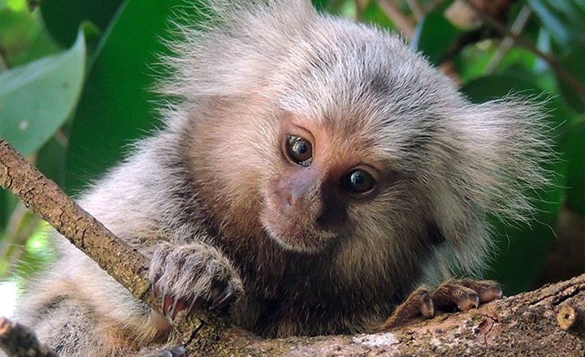
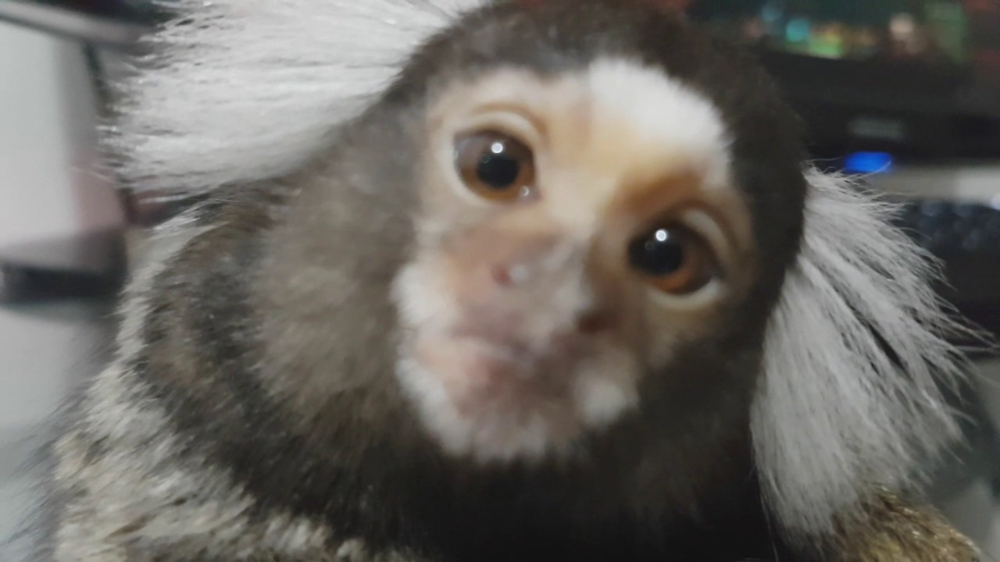

Macaquinho de Estimação

Se você sonha em ter um macaco de estimação, mas não sabe nem por onde começar,
neste artigo nós vamos passar algumas informações bem importantes sobre esses animais!
Saiba sobre os cuidados necessários, a legislação envolvida em uma posse responsável e muito mais.
Espécies de macaco de estimação com comercialização legalizada pelo Ibama
No Brasil, o Ibama autoriza a compra e venda de dois gêneros de macacos. São eles:
o macaco sagui e o macaco prego. Os dois gêneros podem ser encontrados em criadouros legalizados,
que comercializam apenas animais nascidos em cativeiro. Ou seja: dessa maneira, os macaquinhos não
são retirados da floresta e postos à venda, eles já nascem nesses estabelecimentos destinados à comercialização.
Nesses casos, o estabelecimento deve apresentar uma documentação específica vinculando o animal ao Sisfauna, que faz parte do Ibama. O macaco de estimação recebe um microchip para que seja possível rastrear e monitorar a sua origem, o que também contribui para atestar a legalidade do estabelecimento. O macaco sagui é o mais comum de ser encontrado para comercialização e, neste gênero, podem ser encontrados o sagui de tufo branco (C. jacchus) e o sagui de tufo preto (C. penicillata). Macaco e outros animais silvestres: cuidados antes de adquirir

O Brasil é um país continental, com uma diversidade incrível em sua flora e fauna. Infelizmente, por conta dessa diversidade,
muitos criminosos praticam o contrabando de animais silvestres buscando apenas o seu próprio enriquecimento. Nesses casos, tanto o
macaco quanto outros animais são capturados em seus habitats naturais, arrancados do convívio com outros da sua espécie,
e frequentemente são separados de seus pais quando ainda são filhotes.
O transporte até o local da venda é feito sem qualquer tipo de cuidado com a segurança e o bem-estar do animal, e por conta disso muitos deles acabam por morrer ainda durante a viagem. Algumas vezes os compradores desconhecem que estão cometendo um crime, pois nem sempre o traficante ou o vendedor de animais silvestres tem aspectos claramente duvidosos, como um criadouro instalado em fundo de quintal com animais vítimas de maus-tratos. Muitas vezes, são as lojas dos bairros nobres das cidades de todo o país que vendem esses animais que foram contrabandeados e que, logo que chegam à casa dos seus novos tutores, começam a apresentar problemas de saúde. Por isso, antes de efetuar a compra de um animal silvestre, pesquise muito para ter certeza absoluta de que está negociando com um criador autorizado pelo Ibama. Só assim você poderá contribuir com o combate ao tráfico ilegal, que maltrata e tira a vida de tantos animais silvestres por todo o nosso país. Confira também |